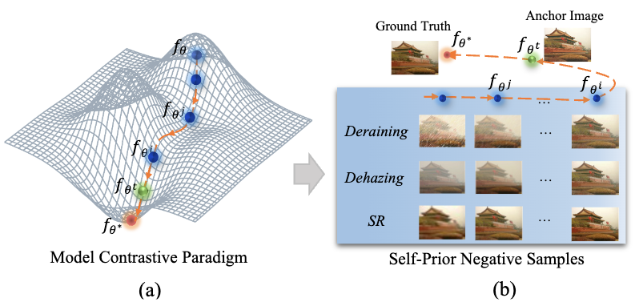

Abstract
Contrastive learning, a prominent technique in high-level vision tasks, has recently been applied to address the low-level vision tasks. In addition to minimizing the reconstruction error, contrastive learning-based image restoration methods aim to push the solution to be far apart from the negative samples. It helps to refine the solution space effectively, tackling the inherent challenges of ill-posed nature of image restoration. Nevertheless, the predominant methods of utilizing manually generated negative samples tailored to a certain image restoration task inherently introduce significant biases and limit the applicability to a wide range of image restoration challenges. To address these challenges, in this work, we develop a novel contrastive learning-based image restoration method by 'learning from history', which dynamically generates negative samples from the historical models. Our approach, named model contrastive learning for image restoration (MCLIR), rejuvenates historical models as negative models, making it compatible with diverse image restoration tasks and without additional priors of the tasks. Furthermore, we fully exploit the statistical information from the negative models to generate an uncertainty map as a by-product of our model, to derive an uncertainty-aware reconstruction loss. Extensive experiments highlight the effectiveness of our proposed method. When implemented with existing models, MCLIR has shown significant improvements in a range of tasks and architectures, encompassing both single degradation tasks and all-in-one models.
Exploiting the Intermediate Models during Optimizing.
While existing contrastive learning paradigms have achieved impressive performance by leveraging approaches such as hard negative mining and curriculum learning strategies, they still face certain intrinsic limitations. One of the primary constraints is the over-reliance on task-oriented priors, which impedes their generalization capability across various image restoration tasks. Many existing works exhibit a notable bias towards a particular task, wherein the generation of negative samples is associated to the certain task only.

We turn our focus to the target model itself, rather than sample selection. In recent literature, much of the spotlight has been directed towards negative sample collection, often overlooking a latent gem, the latency model, during the learning process. Specifically, the latency model, when operating within a close optimization step, shares strikingly similar parameters with the current model. This intrinsic similarity paves the way for the construction of proper negatives pertinent to the current anchor sample. To illustrate this concept, we introduce a toy example as the above. It becomes evident that, throughout the learning journey, the output of the latency model exhibits a suboptimal but congruent distribution relative to the current anchor sample. This alignment offers the potential to derive 'hard' negatives that are well suited to the task at hand. Furthermore, as the entire learning process is incrementally refined, the negatives in our model contrastive paradigm adopt a curriculum way naturally. Motivated by these insights, we put forth an innovative model contrastive learning for image restoration tasks.
Results
Improvement on Multiple Image Restoration Tasks
Comparisons between models retrained by our proposed model contrastive paradigm and the originals. Retrained models can achieve remarkable improvements on various image restoration tasks.
Comparied to Existing Approaches
A comparative analysis of the existing contrastive paradigms versus our proposed model contrastive approach. Typically, existing methods are task-oriented and are proposed for image dehazing (CR (Wu et al. 2021) and CCR (Zheng et al. 2023)) and image super-resolution (PCL (Wu, Jiang, and Liu 2023)), separately. Our model contrastive paradigm is task-agonist and outperform existing methods.
BibTeX
@article{Wu_Jiang_Jiang_Liu_2024,
title={Learning from History: Task-agnostic Model Contrastive Learning for Image Restoration},
volume={38},
url={https://ojs.aaai.org/index.php/AAAI/article/view/28412},
DOI={10.1609/aaai.v38i6.28412},
number={6},
journal={Proceedings of the AAAI Conference on Artificial Intelligence},
author={Wu, Gang and Jiang, Junjun and Jiang, Kui and Liu, Xianming},
year={2024},
month={Mar.},
pages={5976-5984}
}